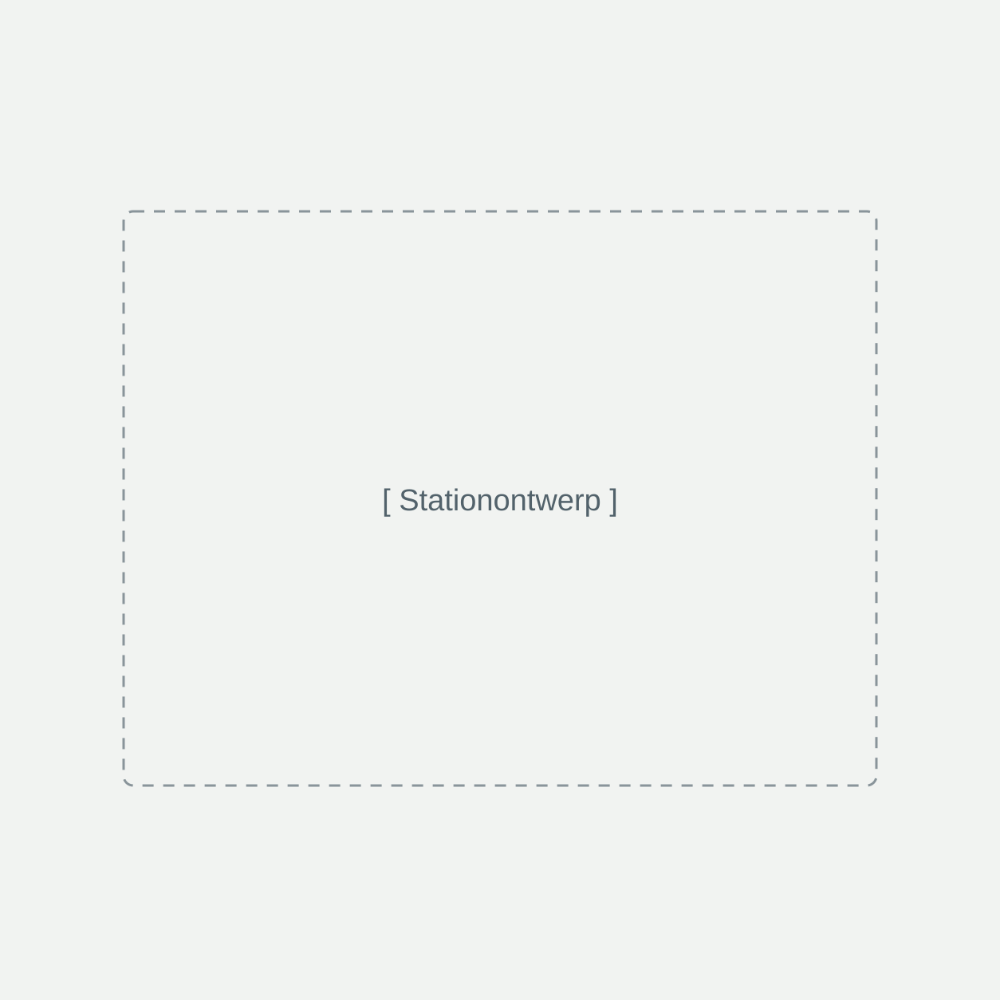

01
Tik.
Betaal contactloos met uw betaalkaart of telefoon. Geen app of account nodig.
Een lege telefoon komt nooit gelegen. Pak een Henk, laad onderweg op en ga verder met uw dag.

U hoeft uw dag niet te onderbreken voor een stopcontact. Henk gaat gewoon met u mee.
Betaal contactloos met uw betaalkaart of telefoon. Geen app of account nodig.
Neem de vrijgegeven powerbank, sluit uw telefoon aan en laad op terwijl u verdergaat.
Plaats de powerbank terug in een beschikbaar Henk-station. Dan stopt uw huur.
Dit is hoe Henk gaat werken. Het netwerk begint met een pilot in Den Haag.
Van hotelreceptie tot café: geef uw bezoekers een extra service zonder extra werk. U maakt ruimte voor Henk. Wij regelen de rest.
Word locatiepartnerGeen aanschafkosten voor geselecteerde partners. Ook de installatie regelen wij.
Bezoekers huren en retourneren zelf. Henk verzorgt het beheer en de betalingsafhandeling.
Ontvang een afgesproken deel van de huurinkomsten. De afspraken leggen we samen vast.
Installatie, onderhoud en ondersteuning: u heeft één aanspreekpunt bij Henk.
Een gast met een lege telefoon. Een bezoeker die zijn ticket nodig heeft. Henk helpt op het juiste moment.
Na een lange reis wil uw gast meteen op pad. Met een Henk bij de receptie blijven navigatie, reserveringen en tickets binnen handbereik.
We bouwen aan een netwerk waarin u Henk op de ene plek meeneemt en op een andere plek terugbrengt. De eerste stap: een pilot met geselecteerde partners in Den Haag.
Bouw mee aan het netwerkHotels · horeca · evenementen
cultuur · sport · publieke locaties
De eerste locaties worden bekendgemaakt zodra de pilot start.
De beoogde werkwijze is simpel: tik uw betaalkaart of telefoon tegen de betaalterminal, pak de powerbank en sluit uw telefoon aan. Na gebruik brengt u hem terug in een beschikbaar Henk-station.
Nee. Henk wordt ontwikkeld voor contactloos huren zonder verplichte app of account. U moet snel kunnen opladen en verdergaan.
De definitieve tarieven en eventuele borg worden voor de lancering vastgesteld. U ziet de geldende prijs op het station voordat u begint met huren.
Het uitgangspunt is een powerbank met ingebouwde USB-C- en Lightning-kabels. De uiteindelijke aansluitingen en productspecificaties worden bevestigd bij de introductie.
Het model gaat uit van kosteloze plaatsing en installatie bij geselecteerde partners. Henk verzorgt het beheer, onderhoud en de betalingsafhandeling. De samenwerking en verdeling van opbrengsten worden vastgelegd in de partnerafspraken.
Ja, evenementen zijn een belangrijk onderdeel van het plan. We bespreken graag de mogelijkheden voor tijdelijke stations en passende branding. Vermeld de locatie, datum en het verwachte bezoekersaantal in uw aanvraag.
Henk is in voorbereiding. De eerste focus is een pilot in Den Haag. Er zijn op deze website nog geen operationele stations vermeld. Wilt u een van de eerste locatiepartners worden? Laat van u horen.
Vertel ons over uw locatie of evenement. Samen bekijken we hoe Henk uw bezoekers verder kan helpen.
Contactgegevens volgen.